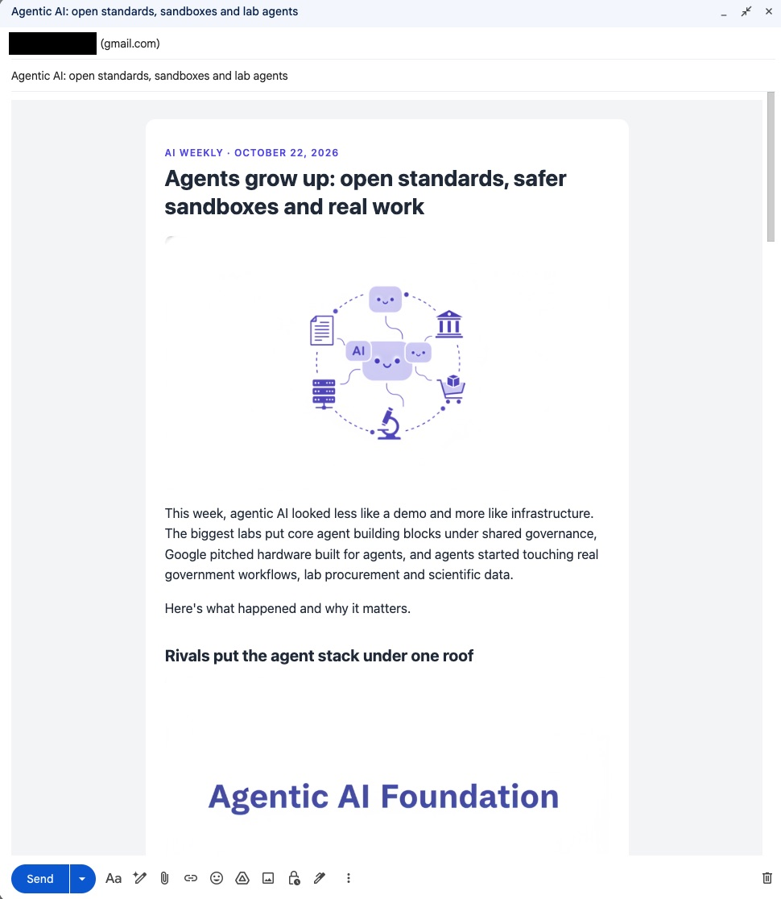
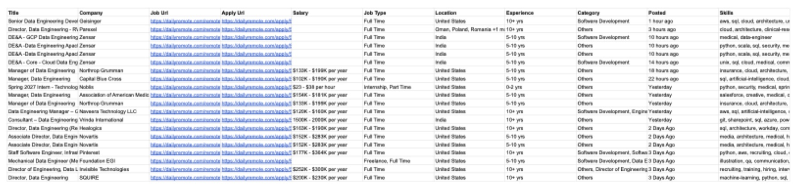

Data pipelines with AI,
built in the open.
AV AI DE Society is a community of data engineers who use AI agents to pull, shape and ship data.
Every project in our repo comes with the prompt that started it, the code that ran, what it cost and what went wrong along the way.
Scrape a job board into a Google Sheet. Turn a week of news into a Gmail draft.
Then share how you did it, so the next person doesn't start from zero.

20 data engineering jobs, from one link to a Google Sheet, for 24 scraping credits.
Every project ships with its prompt, code and cost.
No slides and no theory first. Each example in the repo is a real run you can read top to bottom and repeat: what was asked, which tools ran in which order, what came out, and the lessons.

How every society project is built.
Workflows, agents and tools: plain-language instructions, an AI agent that makes the calls, and Python scripts that do the work.
Projects from the repo.
Two projects and four example runs so far, each with its full write-up on GitHub.
What the runs taught us.
“Check the count first. The user expected about 1,700 jobs. The search actually had 249. A single scrape caught this before any money was spent.
“Image models still misspell words, so keep in-image text short and check every image.
“Map plus one screenshot scrape is enough for "map this site and show me". No crawl was needed.
FAQ
Who is the society for?
Data engineers, analysts and anyone who moves data for a living and wants AI agents doing more of the collecting, cleaning and delivering.
What does a run cost?
From our examples: about $0.02 of Perplexity research for a newsletter, 24 Firecrawl credits for 20 job listings, 2 credits for a 452-URL site map, and 1 scrape for a branding breakdown. Google Sheets is free.
Which tools do the projects use?
Claude Code as the agent, Firecrawl for scraping and site maps, the Perplexity Agent API for research, Nano Banana through Kie.ai for images, and the Google Sheets and Gmail APIs for delivery.
Do I need to know Python?
It helps. You describe the job and the agent runs the tools, but you'll want to read a script and fix it when a site changes.
How do I share a project?
Add a folder with a workflow, your tools and an example run write-up, the same way newsletter-automation and scrapper are laid out.
Where do API keys go?
In a .env file inside each project, never in code or commits. Each project ships a .env.example to copy.